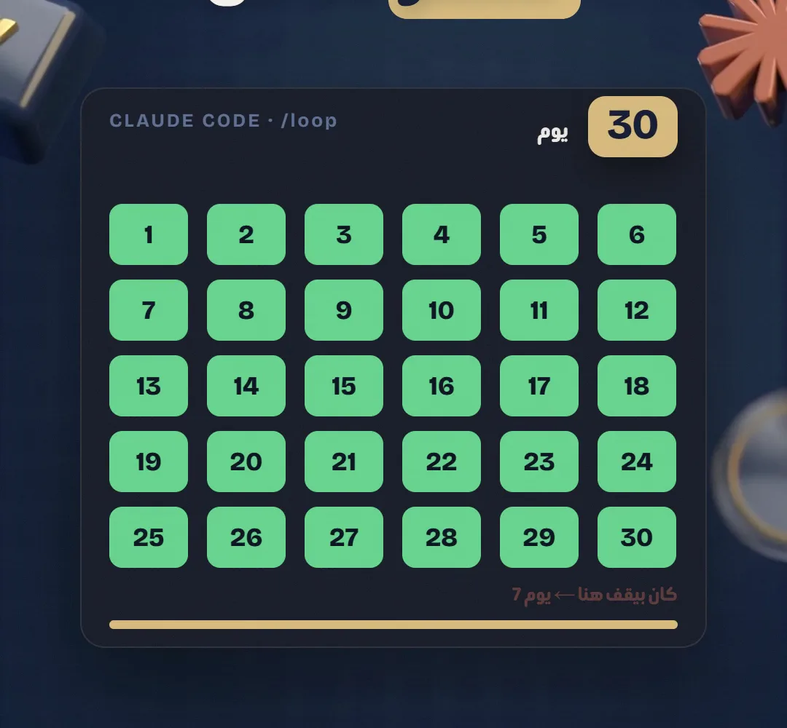
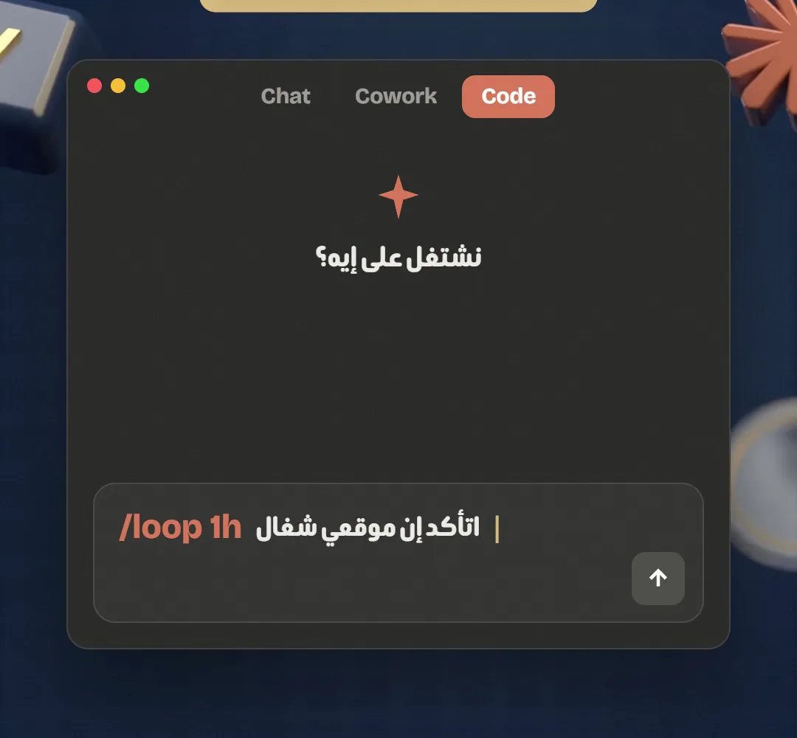
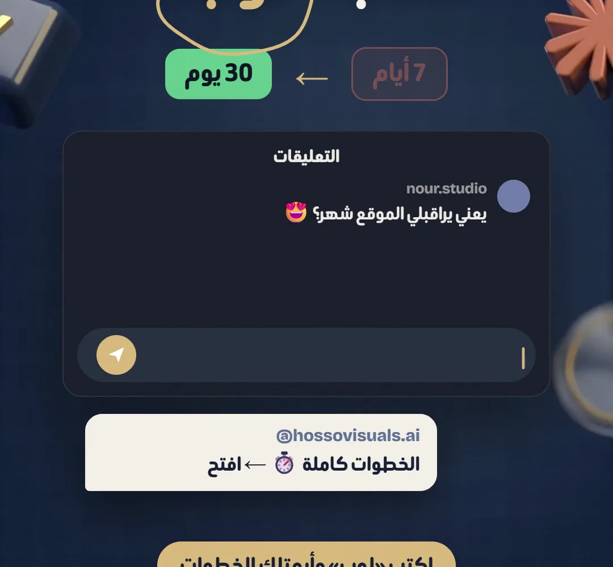
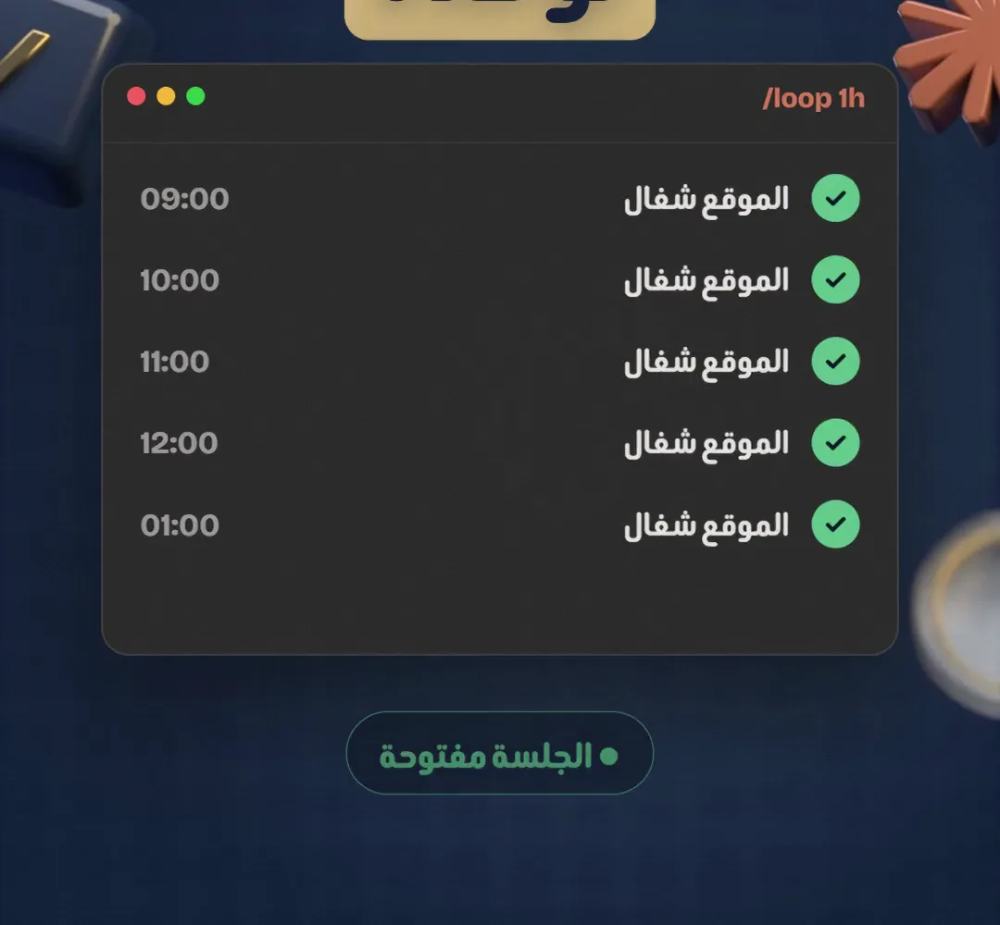
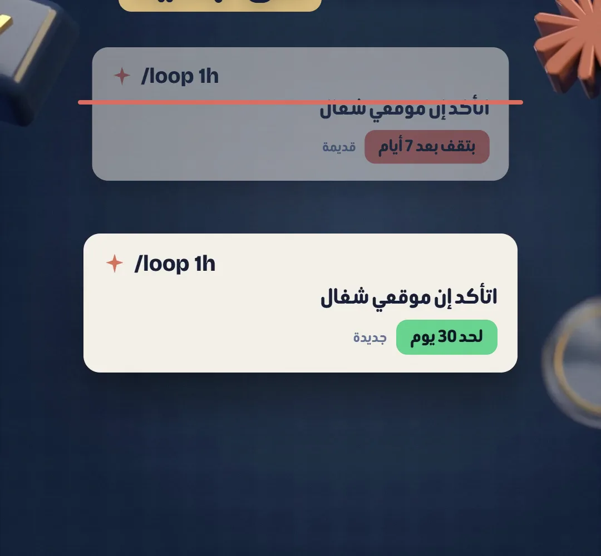

شهــركامـــل
في Claude Code فيه أمر اسمه /loop: بتكتب المهمة مرة، وClaude يفضل يعملها لوحده كل فترة. كانت بتقف بعد 7 أيام، ومن نسخة 2.1.330 بقت تكمّل لحد 30 يوم طول ما الجلسة مفتوحة. دي الخطوات.


- 01
حدّث Claude Code
افتح Claude Code (تاب Code في تطبيق Claude Desktop، أو من التيرمنال) واتأكد إنه على آخر نسخة. التلاتين يوم بدأت من نسخة 2.1.330 حسب سجل التحديثات الرسمي، وقبلها كانت المهام المتكررة بتقف بعد 7 أيام.

المهمة بتكمّل لحد اليوم 30 بدل ما تقف في اليوم 7 (مشهد توضيحي من الريل) - 02
اكتب /loop والمدة والمطلوب
اكتب /loop وبعدها كل قد إيه، وبعدها المطلوب بكلامك. مثال: /loop 1h اتأكد إن موقعي شغال. الوحدات: s ثواني، m دقايق، h ساعات، d أيام. ممكن تكتب المدة في الآخر كمان زي «every 2 hours».

/loop 1h وبعدها المهمة بالعربي (مشهد توضيحي من الريل) - 03
من غير مدة؟
لو كتبت /loop والمطلوب بس من غير مدة، Claude بيختار الوقت بنفسه كل مرة (من دقيقة لساعة) حسب الشغل. وأي لوب ماوقفتهاش بتخلص لوحدها بعد 30 يوم من ما بدأت.

كانت 7 أيام، بقت 30 يوم (مشهد توضيحي من الريل) - 04
خلّي الجلسة مفتوحة
اللوب بتشتغل جوه الجلسة: لازم Claude Code يفضل مفتوح والجهاز شغال. لو قفلت الجلسة المهام بتقف. عايز توقّفها؟ قول لـ Claude «وقّف اللوب» أو «إيه المهام المتجدولة عندي؟» عشان تشوفها. الجلسة الواحدة تشيل لحد 50 مهمة.

كل ساعة بيشيّك لوحده طول ما الجلسة مفتوحة (مشهد توضيحي من الريل) - 05
اللوب القديمة
أي مهمة متكررة اتعملت قبل التحديث لسه هتقف بعد 7 أيام. عشان تاخد التلاتين يوم: وقّفها واعملها من جديد بنفس الأمر بعد ما تحدّث.

القديمة بتقف بعد 7 أيام، الجديدة لحد 30 يوم (مشهد توضيحي من الريل)
عايز حد يعملهولك؟
مش فاضي تتعلم وتعمل بنفسك؟ أنا بعمل ريلز لبراندك بنفس الطريقة اللي بشرحها هنا.